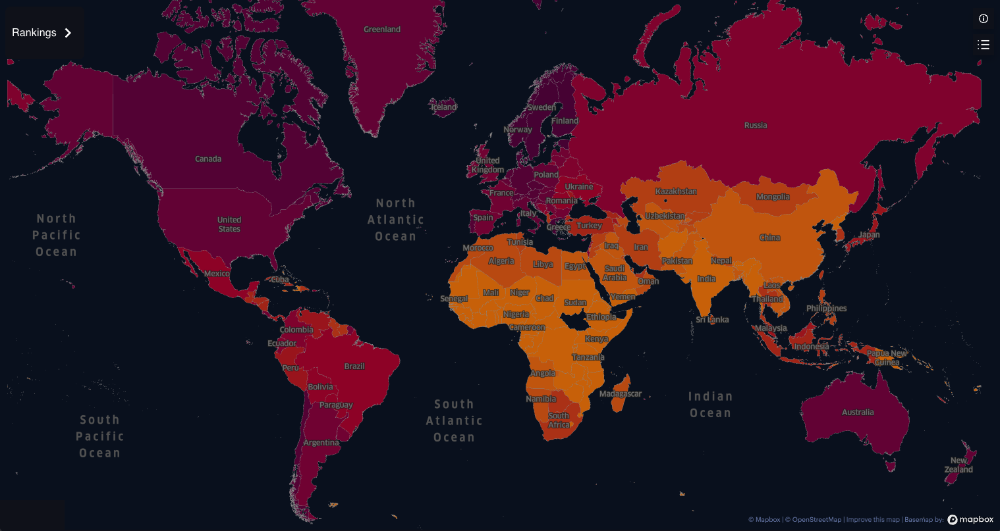
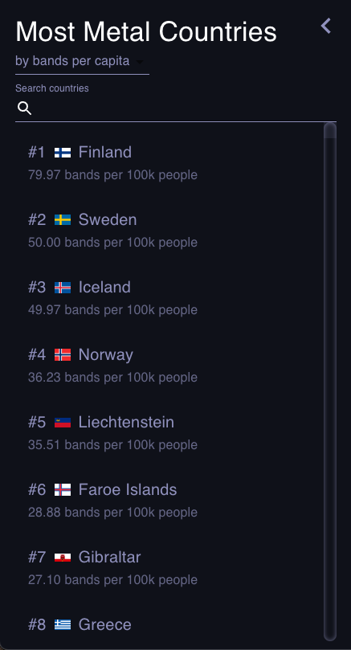

Metal Maps
This project goal was to use data from the Metal Archives website and the United States Census Bureau to create a fun and interactive map visualizing different types of metrics. Metrics were calculated at a country level and include:
Metal Maps is a web application built primarily with
The key features of Metal Maps are

